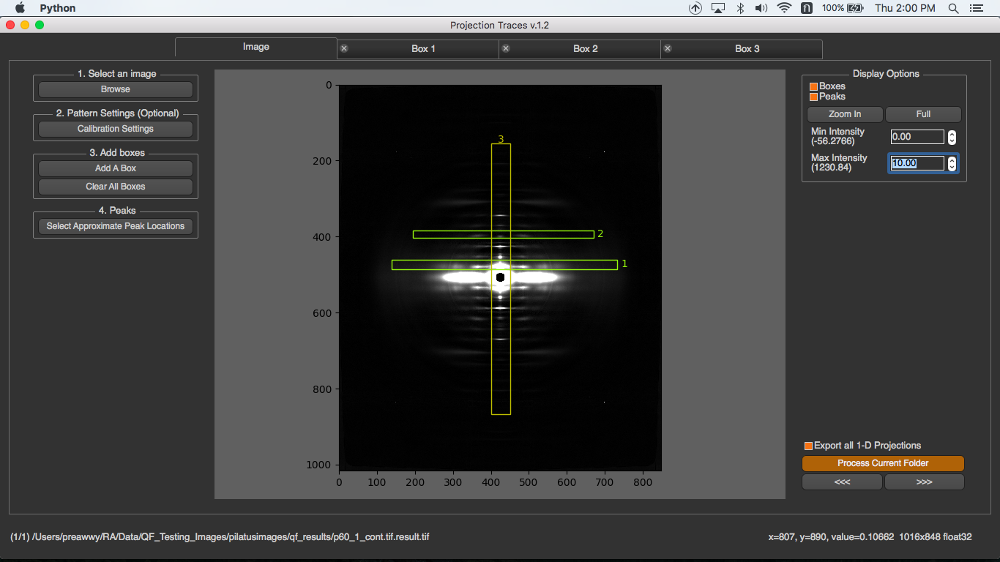
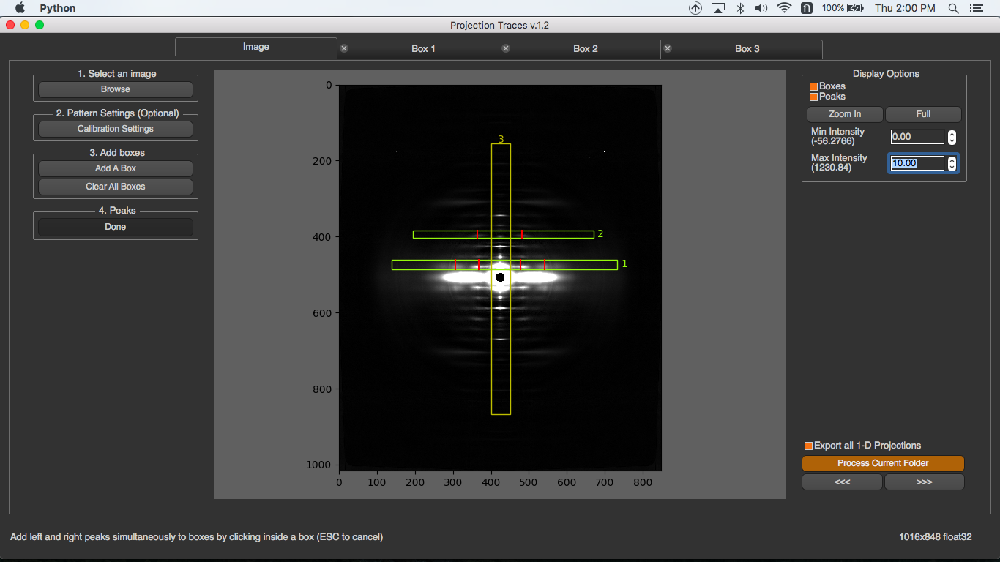

How to use¶
Once the program is run, you will see the steps 1 to 4 that you have to do on the left menu bar.

First, select an image to process. Second, configure calibration settings (optional). Third, add how many boxes you want. Finally, select peak locations in each box. For each folder, you just need to do it once on the first image. When another image in the same folder is processed, all these settings will be used.
In this page, you will know about …
Adding Boxes¶
To add a box, you have to click on “Add A Box” button, and draw the box on the image. If the height of the box is smaller that its width, this box is horizontal box. Otherwise, it’s a vertical box.

After a box is drawn, a box detail dialog will pop up. You need to specify box’s name and background subtraction method. This background subtraction will apply to the projection after peaks are selected.

Once a box is added, there’s a new tab created. You can add how many boxes you need by repeatedly adding a box. The box name will be written on the image and its information will be displayed in its tab.

Select Approximate peak locations¶
To select the approximate peak locations, you can just click on the button, select them in the box and click “Done”. When you select a peak, the program will automatically select the corresponding peak on the opposite site.

If there are multiple boxes, it’s better to select the peak locations in the box tab. To select peaks in the box tab, you can go to that box tab and select peaks by pressing “Select Peaks” button, then select them on the 1-D projection on the left and press “Done”.

When peaks in a box is selected, the program will process image by these steps to get all results
Select Convex Hull Range¶
If you select Convex Hull as background subtraction method for a box, and peaks are selected. The program will automatically select start and end points for Convex Hull. If you want to change this range, you can click “Set Manual Convex Hull Range” and select start and end points on the plot

Remove A Box¶
To remove a box, you can just close its tab
Display options¶
In the image tab, there are display options shown on the right. These options will not affect any processing. You can check “Boxes” or “Peaks” to be displayed on the image. You can zoom-in by pressing “Zoom in” and select the zoom in area on the image by drawing a rectangle. (You can zoom-in or zoom-out by mouse wheeling too). Also, you can select min/max intensity to see the image clearly.

In each box tab, you will see multiple check boxes in the section. You can check or uncheck whether you want to see it in the plot

Other Options¶
There’re several options on the bottom left in image tab.

- Export All 1-D Projections
If this checkbox is checked, and boxes are added, the program will save the original 1-D projection to a text file in 1d_projections folder under pt_results which is created under the image directory. If peaks are also specified, background subtracted projection will be saved in the same folder too. - Process Current Folder
This will process the whole images in current directory with current settings (boxes and peaks) - Previous and Next Buttons
This will make the program go to process the next or previous image with current settings